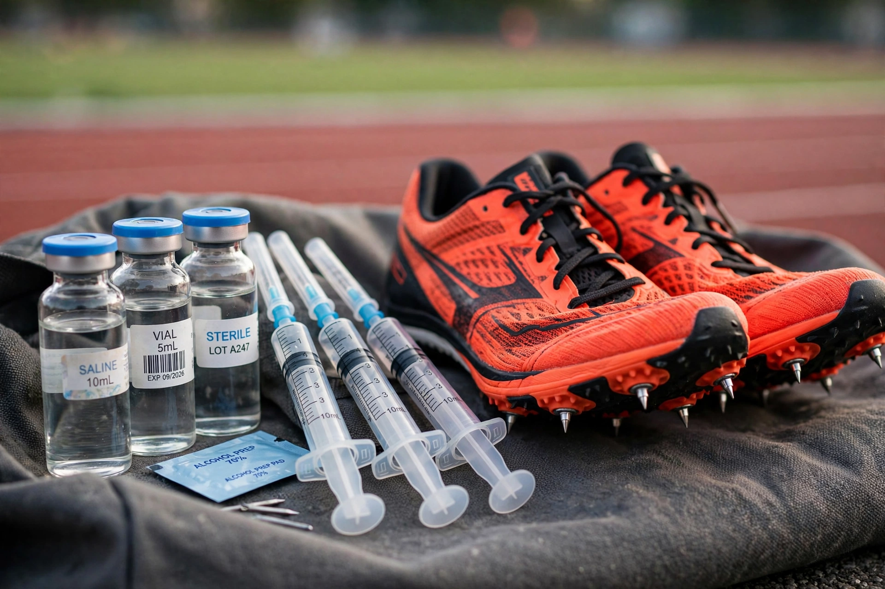

| Doping in sport | |
| Definition | Use of prohibited substances or methods to enhance athletic performance |
|---|---|
| Common substances | Anabolic steroids, EPO, human growth hormone, stimulants, blood transfusions |
| Governing body | World Anti-Doping Agency (since 1999) |
| Notorious cases | Ben Johnson (1988), BALCO, Lance Armstrong, Russian state program |

In competitive sports, doping is the use of banned performance-enhancing substances or methods by athletes. The practice is considered unethical and dangerous, and is prohibited by virtually all international sports organizations. The word doping is often attributed to an Afrikaans term for a stimulant drink given to racehorses, or to doop, a viscous opium preparation. Anti-doping rules rest on three grounds: health risks to athletes, unfair advantage, and the "spirit of sport."
Major categories on the WADA Prohibited List include anabolic-androgenic steroids (building muscle and aiding recovery), peptide hormones such as erythropoietin (EPO, which boosts red-blood-cell production) and human growth hormone, stimulants, narcotics, diuretics and masking agents, and beta blockers in precision sports. Prohibited methods include blood doping (transfusions or EPO to raise oxygen delivery), gene doping, and tampering with samples. Athletes may obtain therapeutic use exemptions for legitimate medical needs.
Stimulant use in endurance racing was rampant in the late 19th century; marathoner Thomas Hicks nearly died from strychnine at the 1904 Olympics. Amphetamines spread after World War II; the deaths of cyclists Knud Enemark Jensen (1960 Olympics) and Tom Simpson (1967 Tour de France) pushed the IOC to introduce testing in 1968. State-run programs, most notoriously East Germany's, industrialized steroid use in the 1970s. Canadian sprinter Ben Johnson's positive test at the 1988 Seoul Olympics — after winning the 100 metres in world-record time — became the scandal that defined the era. The 1998 Festina affair in cycling prompted the creation of WADA. In the 2000s, the BALCO scandal implicated stars in baseball and track; cyclist Lance Armstrong was stripped of his seven Tour de France titles in 2012 after a USADA investigation. Investigations in the 2010s exposed a Russian state-sponsored system including sample tampering at the Sochi Olympics.
Testing combines in-competition and no-notice out-of-competition urine and blood collection, athlete biological passports that track biomarkers longitudinally, and long-term sample storage allowing reanalysis years later. Sanctions typically range from reprimands to four-year bans, with lifetime bans for repeat or trafficking offenses; results, titles, and prize money are forfeited. Critics note the detection race favors dopers using designer drugs and microdosing, while defenders of the system point to increasingly sensitive analytics and intelligence-led investigations.